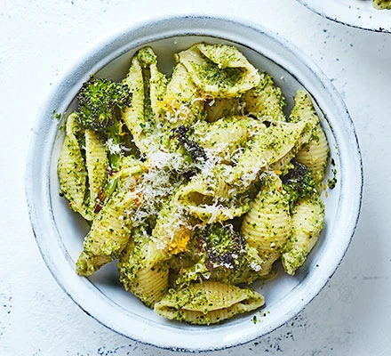

Broccoli pasta shells

Broccoli Pasta Shells are delicious
Ingredients
- 1 head of broccoli, chopped into florets
- 1 garlic clove, unpeeled
- 2 tbsp olive oil
- 250g pasta shells
- ½ small pack parsley
- ½ small pack basil
Steps
-
Heat the oven to 200C/180C fan/gas 6. Toss the broccoli and garlic in 1 tbsp
of the olive oil on a roasting tray and roast in the oven for 10-12 mins,
until softened.
-
Tip the pasta shells into a pan of boiling, salted water. Cook according to
packet instructions and drain. Tip the parsley, basil, pine nuts, lemon
juice and parmesan into a blender. Once the broccoli is done, set aside a
few of the smaller pieces. Squeeze the garlic from its skin, add to the
blender along with the rest of the broccoli, pulse to a pesto and season
well.
-
Toss the pasta with the pesto. Add the reserved broccoli florets, split
between two bowls and top with a little extra parmesan, the lemon zest and a
good grinding of black pepper, if you like.